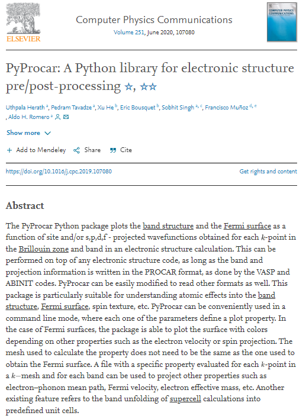

Getting started#
This guide is here to help you start using PyProcar with the help of our examples and tutorials.
Installation#
The only prerequisite for installing PyProcar is Python itself. If you don’t have Python yet and want the simplest way to get started, we recommend you use the Anaconda Distribution.
Installing a specific version? Installing from source? Check the Installation page.
Paper#
Using PyProcar in your research? Please consider citing or acknowledging us. We have a Elsevier Publication!
Using PyProcar in your research? Please consider citing or acknowledging us. We have a Elsevier Publication!

Support#
If you want to support the PyProcar please see the Contributing page.
Citing PyProcar#
There are two papers about PyProcar: 1st Paper and 2nd Paper.
If you are using PyProcar in your scientific research, please help our scientific visibility by citing our work! Head over to Citing PyProcar to learn more about citing PyProcar.